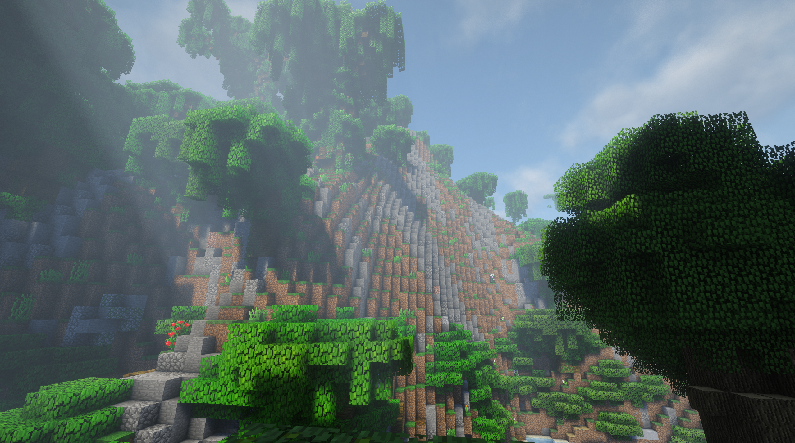
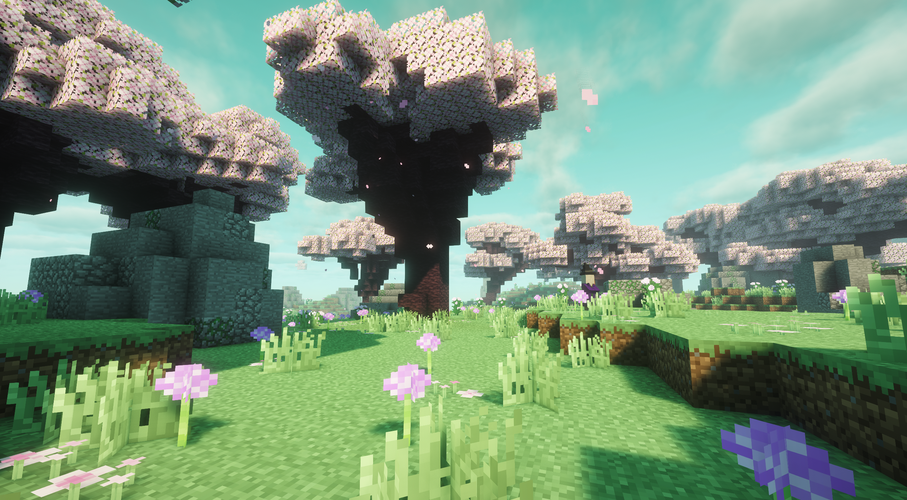

Starfall Town World Guide
自然之境
探索自然地形、寻找稀有资源，并挑战更多种类的地牢。
世界定位
自然之境是服务器专门用于探索与冒险的新世界。这里保留了更完整的自然景观，拥有丰富资源、美丽地形和更多类型的地牢，适合采集、远足、探险和挑战。
自然探索资源采集多样地形地牢挑战冒险旅行
进入前必须知道
不能建立王国
自然之境不支持 KingdomsX 王国创建、王国领土、王国核心和王国外交玩法。
不能圈地
自然之境不支持 Dominion 圈地保护。请不要把重要仓库、长期基地或贵重建筑放在这里。
更适合探索
推荐把这里当作公共探险区，用来找资源、看风景、寻找地牢和完成冒险目标。
贵重物资及时带回
发现稀有资源或地牢战利品后，建议尽快带回主世界的安全区域保存。
自然之境没有圈地和王国保护。出发前请确认背包空间、装备耐久和返回路线，不要把无法承受损失的物品一次性带入。
自然景观
这里的地形重点是“值得走出去看一看”：高耸山地、密林、悬崖、溪流、花海和不同风格的自然区域彼此连接，适合截图、旅行和寻找隐藏路线。


资源探索
自然之境拥有比常规生存区域更丰富的采集机会。不同地形可能对应不同的木材、植物、矿物、建筑材料和冒险资源。
- 先观察地形和周围环境，记住返回方向或记录坐标。
- 根据需要选择森林、山地、溪谷、花海等区域采集资源。
- 遇到陌生结构或地下入口时，先清理周边怪物，再判断是否进入。
- 背包接近满载时优先返回安全区域，避免因为贪采导致物资全部损失。
推荐把自然之境当成“资源远征地图”：规划路线、准备补给、控制背包容量，比无目的地乱跑更容易满载而归。
更多种类的地牢
自然之境加入了更多类型的地牢和探险结构。地牢不仅是战斗场所，也可能包含宝箱、稀有材料、特殊路线和隐藏奖励。
🏚
地形型地牢与山体、森林或峡谷融为一体，入口可能隐藏在自然地形中。
⚔
战斗型地牢适合组队推进，注意怪物密度、狭窄通道和连续战斗。
🗝
探索型地牢需要观察路线和结构，部分区域可能存在分支道路或隐藏房间。
🎁
奖励型地牢挑战成功后有机会获得稀有资源、材料或其他冒险奖励。
探险准备清单
| 准备项目 | 建议 |
|---|---|
| 装备 | 携带适合战斗的武器、防具和备用工具，至少留出应对突发战斗的耐久。 |
| 补给 | 准备食物、治疗物品、火把或照明工具，以及必要的方块。 |
| 背包 | 提前清理无用物品，给资源和地牢战利品留出空间。 |
| 路线 | 记住出生点、关键地标和返回方向；长途探索建议记录坐标。 |
| 队伍 | 高难地牢建议与朋友同行，分工负责战斗、照明、拾取和导航。 |
与主世界玩法的区别
| 功能 | 主世界 / 常规区域 | 自然之境 |
|---|---|---|
| 圈地 | 可使用 Dominion 保护领地 | 不支持圈地 |
| 王国 | 可使用 KingdomsX 建立与发展 | 不能建立王国 |
| 资源 | 常规生存资源与服务器生活玩法 | 资源更丰富，适合远征采集 |
| 地形 | 以日常建设和生活为主 | 自然地形更丰富，适合观景与探索 |
| 地牢 | 常规挑战区域 | 拥有更多类型的地牢和冒险结构 |
推荐玩法路线
- 在主世界准备好装备、食物、工具和空背包。
- 进入自然之境后先寻找地标，确认自己能够返回。
- 沿着山林、溪谷和特殊结构探索，收集需要的资源。
- 发现地牢后观察入口和周边环境，低风险清理后再深入。
- 组队挑战更复杂的地牢，分配战利品并及时返程。
- 把重要资源带回主世界，再使用圈地、王国、商店和仓库系统进行长期发展。